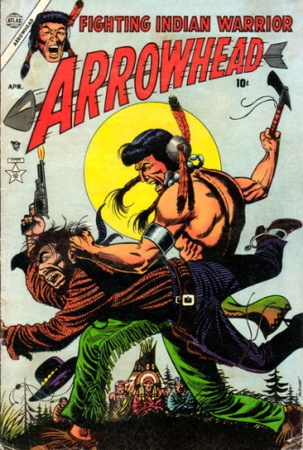

Series: on-going, 4 issues
Illustrator: Joe Sinott, Joe Maneely
Publisher: 1954 Atlas (Marvel)
The Native American warrior known as Arrowhead lived during the days of the American Frontier. He was the son of Pawnee chief Bear-That-Walks. Arrowhead was in direct competition with Running Wolf the son of the tribal medicine man Snake Fang.